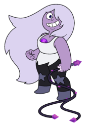

Amethyst
The second youngest member of the Crystal Gems, although she is still thousands of years older than Steven. She has an amethyst embedded on her chest, which she can use to summon an energy whip. Unlike the other Crystal Gems, Amethyst was created on Earth as part of the Homeworld's Kindergarten project to convert natural resources into a Gem-occupied world. While a quartz, a Gem warrior caste are physically strong and use "spin attacks" on opponents, Amethyst was not fully developed in size. Though taken into the team by Rose Quartz when found, Amethyst possesses a rebellious and carefree personality and a bit of a self-image crisis that played in her using her kind's shapeshifting ability and notably eating more food & engaging in human activities more than the other Crystal Gems, which furthers her and Steven's friendship. She also has a mischievous sense of humour, and is often a source of comic relief.